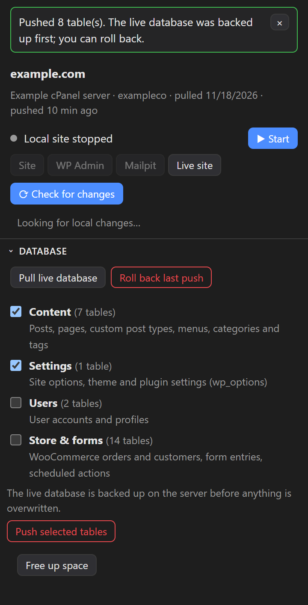

LocalDock
for Orca
Pull WordPress sites from cPanel, run them locally with DDEV, and sync changes back like Source Control.
- Pick a site on your cPanel server
- Pull it and run it with DDEV
- Push and pull changes, with backups
Pull WordPress sites from cPanel, run them locally with DDEV, and sync changes back like Source Control.
